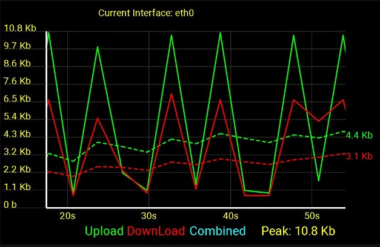

| Introduction | |
|  | |
|
Currently WTFast's market only consists of PC gamers using their proprietary windows software. They wish to expand their target audience to include console gamers. In order to accomplish this WTFast is developing their own WTFast Router that every entertainment platform you own can connect into, providing access to the WTFast GPN (Gamer's Private Network).
Our vision is to incrementally develop and deploy the Android application for WTFast that will be able to configure and poll information from their WTFast router. This app will allow users to not require access to a computer to be able to configure their router for ease of use. Also this app will display statistics for the user to see how well the Gamer's Private Network performs. This Online Help includes:
|
|
| <- Release Notes | Setup -> |